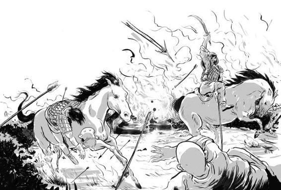
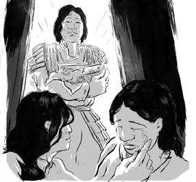
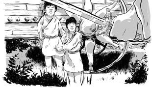
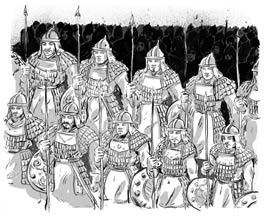
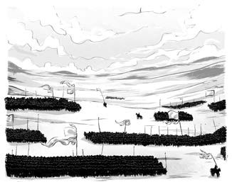
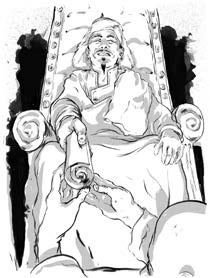

Trong hàng thế kỷ, chiến trường thảo nguyên chỉ xoay quanh một lý do duy nhất, đó là cướp bóc. Các bộ tộc tấn công lẫn nhau, kẻ thua cuộc thì bỏ chạy, còn kẻ chiến thắng thì chiếm lĩnh toàn bộ của cải.

Vào năm 1202, theo yêu cầu của Thoát Lý, Thiết Mộc Chân - lúc này đã bốn mươi tuổi - phải quay lại để chiến đấu với người Thát Đát. Trước trận chiến, Thiết Mộc Chân đã đưa ra một vài luật mới: thứ nhất, trận chiến sẽ không dừng lại cho đến khi đối phương bị đánh bại một lần và mãi mãi. Thứ hai, mọi của cải đoạt được sẽ được nộp lại trực tiếp cho Thiết Mộc Chân. Với tư cách là tộc trưởng, ông sẽ chia chiến lợi phẩm cho mọi người theo cách của mình. Cuối cùng, Thiết Mộc Chân hứa rằng nếu một người hy sinh trên chiến trường, gia đình của người đó sẽ nhận được phần của cải bù đắp xứng đáng.
Cuộc sống trên thảo nguyên chưa bao giờ công bằng, và những luật lệ mới này là một sự cách tân. Tuy nhiên, một số người vẫn không đồng tình với luật mới và rời bỏ Thiết Mộc Chân để theo Trát Mộc Hợp. Những người ở lại là những người trung thành. Nếu những luật lệ này có từ khi Thiết Mộc Chân còn nhỏ, gia đình ông sẽ không bị bộ tộc bỏ lại.

Thiết Mộc Chân dẫn dắt đội quân Mông Cổ tới trận chiến và đánh bại người Thát Đát để chiếm lĩnh của cải. Thiết Mộc Chân phân phát chiến lợi phẩm rất công bằng, ông càng có thêm lòng tin và sự tôn trọng từ mọi người.
Dẫu vậy, Thiết Mộc Chân lại gặp chuyện với luật lệ mới. Bởi không cho phép người Thát Đát trốn chạy, nên ông có thêm hàng nghìn tù binh mới. Nếu để họ sống, họ sẽ lại gây dựng và lớn mạnh, và sẽ có thêm những cuộc chiến mới.

Thiết Mộc Chân và những người đứng đầu khác quyết định hành hình tất cả đàn ông Thát Đát cao lớn hơn trục bánh xe. Tất cả đàn ông, trong đó có nhiều cậu bé Thát Đát đã bị hành hình. Những người còn lại đều trở thành người của bộ tộc Mông Cổ.
Đó là một quyết định tàn bạo. Tất cả người Thát Đát đã trở thành người Mông Cổ (1)
Thiết Mộc Chân muốn mọi thành viên trong bộ tộc phải phục tùng một mình ông. Để thực hiện điều này, ông tổ chức lại quân đội. Ông lập ra các thập hộ với mười binh sĩ. Những chiến binh trong thập hộ đến từ nhiều bộ tộc sẽ chiến đấu bên nhau như những người anh em. Họ không được phép bỏ lại nhau trên chiến trường. Người lớn tuổi nhất chỉ huy cả nhóm.

Mười thập hộ tạo thành một bách hộ với một trăm binh sĩ. Mười bách hộ hợp thành một thiên hộ với một nghìn người. Các binh sĩ sẽ bầu ra người đứng đầu bách hộ và thiên hộ. Và cuối cùng, mười thiên hộ hợp lại thành một vạn hộ - tumen với mười nghìn binh sĩ. Thiết Mộc Chân sẽ tự lựa chọn người đứng đầu mỗi tumen.

Từ đó, mỗi khi Thiết Mộc Chân ra lệnh, lệnh đó sẽ được truyền từ các tướng lĩnh đến từng binh sĩ.
Thiết Mộc Chân chiêu mộ hàng nghìn người gia nhập bộ tộc của ông. Bấy giờ, ông ngỏ ý muốn con trai cả Truật Xích cưới con gái của Thoát Lý. Thoát Lý lúc này đã già. Có người cho rằng Thiết Mộc Chân muốn thâu tóm Khắc Liệt sau khi Thoát Lý qua đời.
Ban đầu, Thoát Lý từ chối. Nhưng sau đó, có lẽ là sợ phản ứng của Thiết Mộc Chân nên ông đã cân nhắc lại. Dẫu gì, Thiết Mộc Chân cũng là chỉ huy của một đội quân hùng mạnh tám mươi nghìn binh sĩ. Thoát Lý gửi lời đến Thiết Mộc Chân rằng ông đồng ý và chọn ngày làm lễ cưới.
Nhưng Thoát Lý lại có một âm mưu khác. Ông ta cử một đám trai tráng tới thảo nguyên gặp Thiết Mộc Chân và gia đình. Tất nhiên, đó không phải là nghi thức chào đón. Họ được cử đi để sát hại Thiết Mộc Chân và gia đình ông.

Chú thích:
[1] Về sau, người ta gọi chung tất cả các tộc người ở Mông Cổ là Thát Đát.